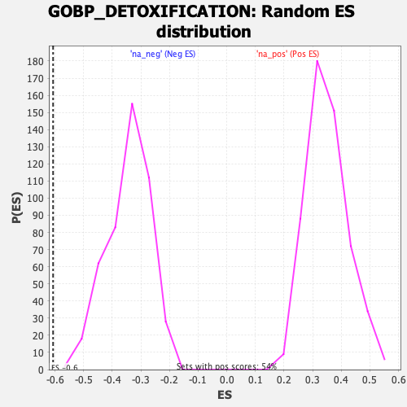

| | | Dataset | DE_genes |
| Phenotype | NoPhenotypeAvailable |
| Upregulated in class | na_neg |
| GeneSet | GOBP_DETOXIFICATION |
| Enrichment Score (ES) | -0.6066221 |
| Normalized Enrichment Score (NES) | -1.7611372 |
| Nominal p-value | 0.0 |
| FDR q-value | 0.13499308 |
| FWER p-Value | 0.867 |
Table: GSEA Results Summary
 Fig 1: Enrichment plot: GOBP_DETOXIFICATION
Fig 1: Enrichment plot: GOBP_DETOXIFICATION
Profile of the Running ES Score & Positions of GeneSet Members on the Rank Ordered List
| SYMBOL | RANK IN GENE LIST | RANK METRIC SCORE | RUNNING ES | CORE ENRICHMENT | | 1 | CYGB | 367 | 86.731 | 0.0078 | No |
| 2 | GSTM2 | 391 | 83.576 | 0.0440 | No |
| 3 | MGST2 | 808 | 45.165 | 0.0286 | No |
| 4 | PTGS2 | 1230 | 30.715 | 0.0062 | No |
| 5 | PTGS1 | 1297 | 28.778 | 0.0137 | No |
| 6 | PIM1 | 2209 | 15.933 | -0.0578 | No |
| 7 | TXNDC17 | 2314 | 15.031 | -0.0600 | No |
| 8 | PXDNL | 2381 | 14.591 | -0.0590 | No |
| 9 | NFE2L2 | 2456 | 14.088 | -0.0590 | No |
| 10 | GCH1 | 2509 | 13.627 | -0.0573 | No |
| 11 | ADH5 | 2559 | 13.187 | -0.0555 | No |
| 12 | ESD | 2878 | 11.193 | -0.0779 | No |
| 13 | SLC15A2 | 3883 | 6.728 | -0.1616 | No |
| 14 | AKR1B10 | 3948 | 6.500 | -0.1641 | No |
| 15 | ABCG2 | 4022 | 6.283 | -0.1676 | No |
| 16 | CAT | 4321 | 5.481 | -0.1908 | No |
| 17 | ALDH1A1 | 4368 | 5.360 | -0.1924 | No |
| 18 | ABCB6 | 4705 | 4.508 | -0.2193 | No |
| 19 | GSTM1 | 4741 | 4.407 | -0.2204 | No |
| 20 | MT1X | 4894 | 4.097 | -0.2316 | No |
| 21 | CLIC2 | 5138 | 3.583 | -0.2510 | No |
| 22 | FBLN5 | 5524 | 2.918 | -0.2829 | No |
| 23 | GPX8 | 5696 | 2.654 | -0.2965 | No |
| 24 | SESN2 | 5791 | 2.525 | -0.3035 | No |
| 25 | ATP7B | 5877 | 2.404 | -0.3097 | No |
| 26 | GSTP1 | 5961 | 2.316 | -0.3158 | No |
| 27 | MT2A | 6013 | 2.252 | -0.3192 | No |
| 28 | AKR7A3 | 6030 | 2.216 | -0.3196 | No |
| 29 | PRDX2 | 6309 | -2.581 | -0.3425 | No |
| 30 | MT1A | 6323 | -2.606 | -0.3424 | No |
| 31 | DHFRP1 | 6470 | -2.822 | -0.3537 | No |
| 32 | GPX4 | 6574 | -3.019 | -0.3612 | No |
| 33 | GSTK1 | 6772 | -3.337 | -0.3767 | No |
| 34 | SRXN1 | 6790 | -3.362 | -0.3767 | No |
| 35 | GSTO1 | 6863 | -3.493 | -0.3813 | No |
| 36 | MGST1 | 7177 | -4.040 | -0.4065 | No |
| 37 | PARK7 | 8139 | -6.612 | -0.4866 | No |
| 38 | GSTZ1 | 8311 | -7.166 | -0.4981 | No |
| 39 | SLC22A18 | 8312 | -7.169 | -0.4948 | No |
| 40 | ATP7A | 8623 | -8.547 | -0.5177 | No |
| 41 | SELENOS | 8880 | -9.748 | -0.5354 | No |
| 42 | GSTO2 | 9021 | -10.695 | -0.5426 | No |
| 43 | SELENOF | 9754 | -16.987 | -0.5981 | Yes |
| 44 | RDH11 | 9772 | -17.184 | -0.5918 | Yes |
| 45 | PRDX5 | 9820 | -17.821 | -0.5877 | Yes |
| 46 | PDZK1 | 10040 | -21.511 | -0.5968 | Yes |
| 47 | UBIAD1 | 10098 | -22.493 | -0.5915 | Yes |
| 48 | GSTM3 | 10229 | -25.285 | -0.5912 | Yes |
| 49 | PRDX3 | 10230 | -25.303 | -0.5796 | Yes |
| 50 | MTARC2 | 10383 | -28.406 | -0.5798 | Yes |
| 51 | MT1E | 10410 | -28.975 | -0.5689 | Yes |
| 52 | PRXL2C | 10528 | -32.176 | -0.5643 | Yes |
| 53 | SOD3 | 10698 | -38.374 | -0.5614 | Yes |
| 54 | GSR | 10742 | -40.311 | -0.5467 | Yes |
| 55 | CD36 | 10776 | -41.464 | -0.5307 | Yes |
| 56 | TXNRD1 | 10780 | -41.559 | -0.5120 | Yes |
| 57 | SELENOW | 10815 | -43.444 | -0.4951 | Yes |
| 58 | TXNRD2 | 10958 | -50.962 | -0.4841 | Yes |
| 59 | PTGES | 11055 | -56.321 | -0.4667 | Yes |
| 60 | TXNRD3 | 11068 | -56.890 | -0.4418 | Yes |
| 61 | RALBP1 | 11161 | -64.985 | -0.4201 | Yes |
| 62 | SELENOT | 11182 | -66.796 | -0.3914 | Yes |
| 63 | GLRX | 11335 | -90.193 | -0.3634 | Yes |
| 64 | NXN | 11447 | -117.947 | -0.3192 | Yes |
| 65 | SLC22A5 | 11549 | -175.115 | -0.2481 | Yes |
| 66 | GPX1 | 11628 | -273.979 | -0.1299 | Yes |
| 67 | GPX3 | 11632 | -286.037 | 0.0003 | Yes |
Table: GSEA details [plain text format]

Fig 2: GOBP_DETOXIFICATION: Random ES distribution
Gene set null distribution of ES for GOBP_DETOXIFICATION